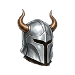
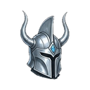
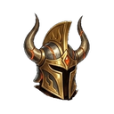
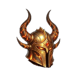

Bakır Miğfer T1
T1Basit bakır miğfer
İSTATİSTİKLER Normal +0
- Can +30
- Fazladan XP +%0,085
- Düşüren
- Yapışkan Yumak Fısıldayan Orman
Mağara Yarasası Karanlık Mağara D1
Basit bakır miğfer

Sağlam demir miğfer

Sert çelik miğfer

Parlak gümüş miğfer

Kraliyet altın miğferi

Ağır platin miğfer

Sihirli selestit miğferi

Efsanevi koruma

Karanlık volkanik miğfer

Usta ejderha miğferi